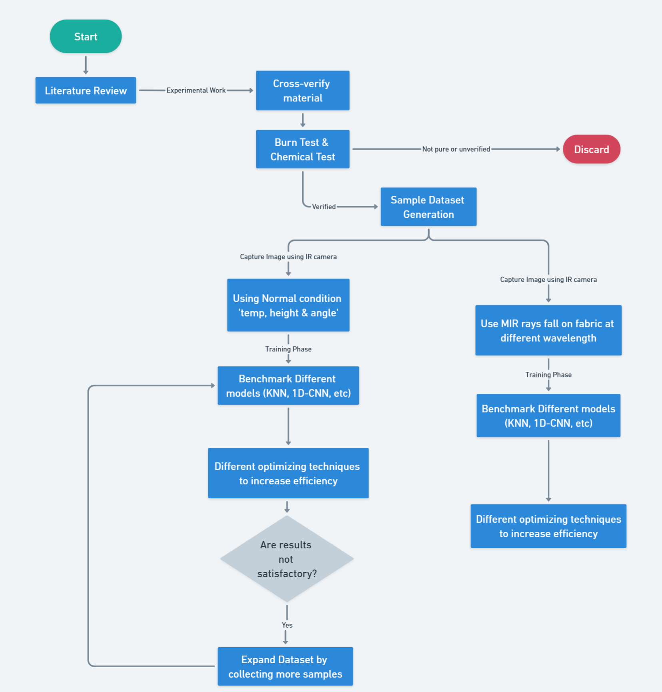
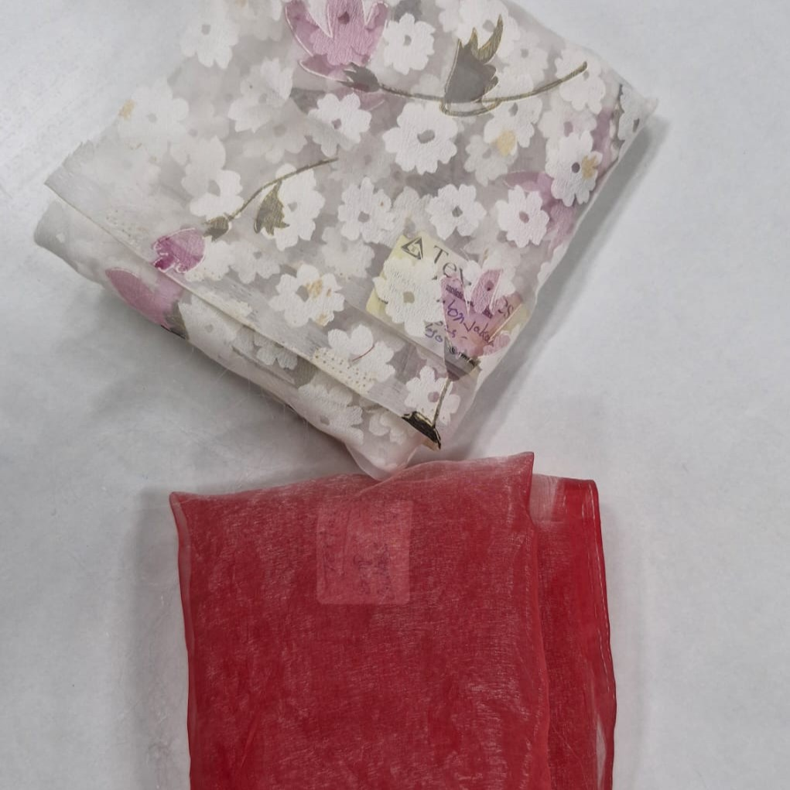
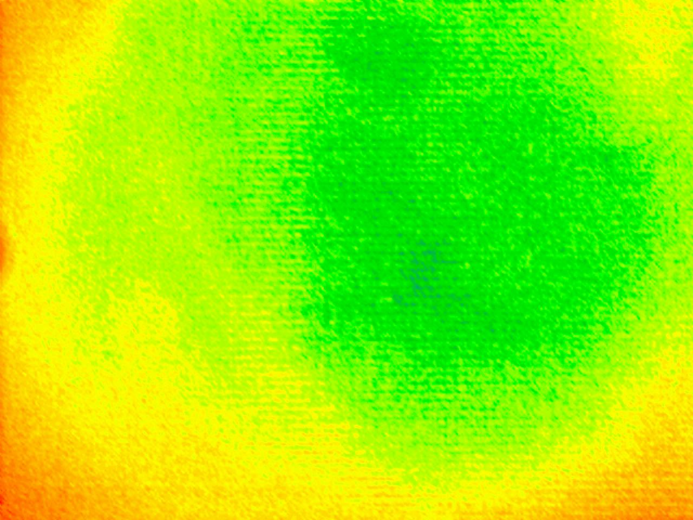
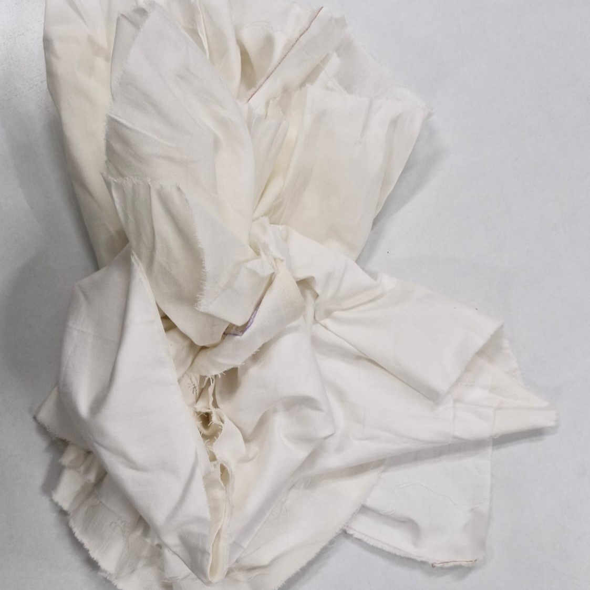
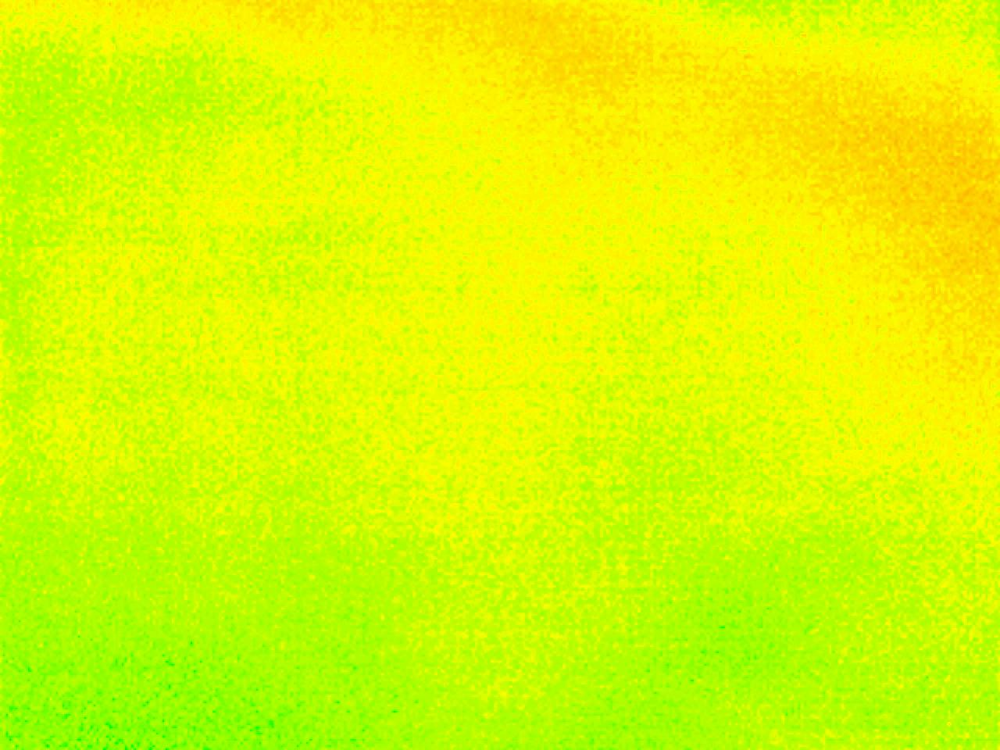
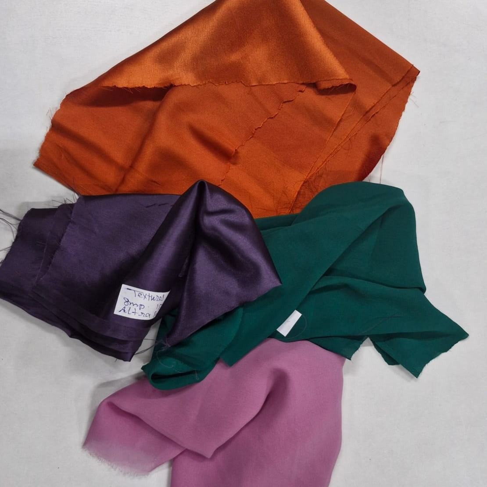
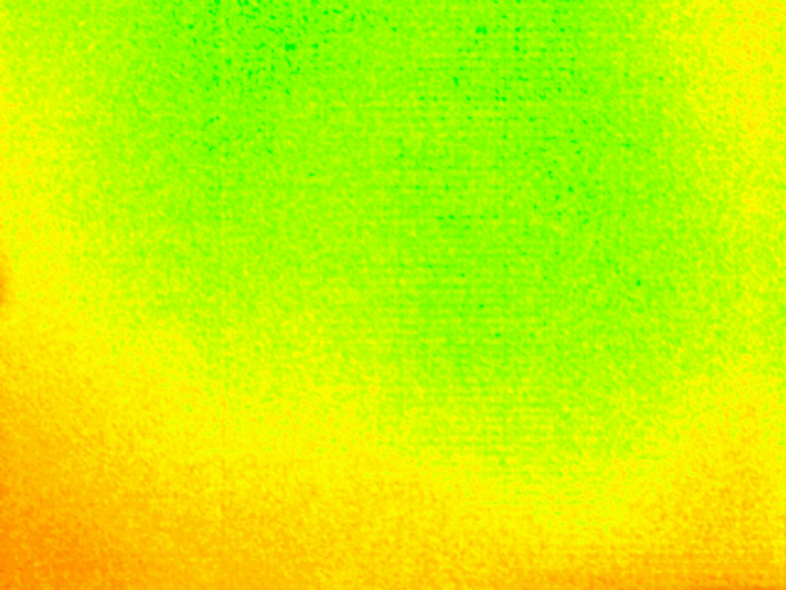

Automated Textile Detection with MIR Imaging
A non-destructive and efficient approach to material detection using Mid-Infrared Imaging and Machine Learning for a circular economy.
About The Project
The Problem
[cite_start]India generates about 7.8 million tons of textile waste annually, with a large portion ending up in landfills[cite: 32, 34]. [cite_start]Manual sorting is slow, error-prone, and a major bottleneck for effective recycling[cite: 38, 39]. This inefficiency hinders the potential for a circular textile economy.
Our Solution
[cite_start]This project explores an automated, non-destructive method for identifying textile materials using Mid-Infrared (MIR) imaging and machine learning[cite: 41]. [cite_start]By leveraging the unique chemical fingerprints MIR provides, we aim to make textile sorting faster, more accurate, and scalable[cite: 42].
Project Objectives
Our main goal is to develop a reliable system for fabric identification. [cite_start]Key objectives include: creating a validated MIR spectral dataset for cotton, polyester, and nylon; building and training various ML models (KNN, SVM, 1D-CNN); and benchmarking their performance to find the most effective classifier[cite: 173, 176, 177, 179].
Methodology
Our research follows a systematic four-phase plan, from literature review and material validation to dataset creation and model optimization. The process ensures that our machine learning models are built on a foundation of reliable, ground-truth data.

Initial Results & Dataset
[cite_start]As of September 20, our initial dataset consists of 120 MIR images (40 for each fabric type) captured under controlled laboratory conditions[cite: 258, 260]. [cite_start]Each fabric's identity was rigorously verified using burn and chemical solubility tests to ensure data integrity[cite: 232].
(a) Nylon Sample

(d) MIR Image of Nylon

(b) Cotton Sample

(e) MIR Image of Cotton

(c) Polyester Sample

(f) MIR Image of Polyester

The Research Team
Lakshya Kumar
2022TT12183
Keshav Chachan
2022TT12148
Under the Guidance of
Prof. Apurba Das
Principal Investigator